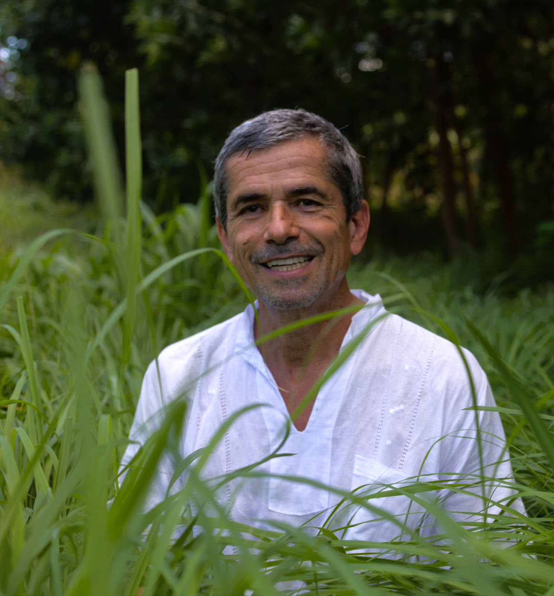
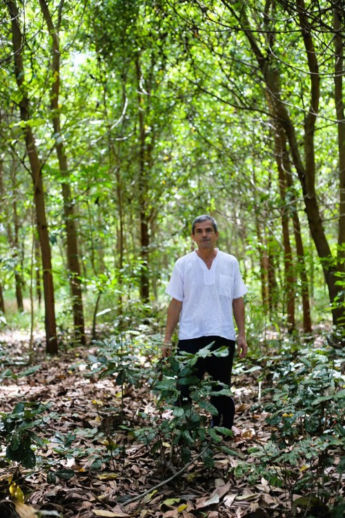

Saúde que vai à raiz.
Consultas médicas especializadas em Cannabis medicinal com abordagem integrativa, preventiva e promotora de Qualidade de Vida. Ciência séria. Cuidado humano.

Consultas médicas especializadas em Cannabis medicinal com abordagem integrativa, preventiva e promotora de Qualidade de Vida. Ciência séria. Cuidado humano.
O Sistema Endocanabinoide humano regula o sono, a dor, o humor, a imunidade e a inflamação. Quando esse sistema está desequilibrado, surgem sintomas que muitas vezes resistem aos tratamentos convencionais. A Cannabis medicinal age diretamente nesse sistema — com crescente respaldo científico e prescrição médica individualizada.
Alzheimer, Parkinson, Esclerose Lateral Amiotrófica (ELA)
Os canabinóides têm ação neuroprotetora, anti-inflamatória e antioxidante comprovada em estudos clínicos. Auxiliam no controle de sintomas motores, agitação, distúrbios de sono e qualidade de vida de pacientes e cuidadores.
Evidência: estudos em modelos de Alzheimer mostram redução de placas amiloides e neuroinflamação com uso de CBD e THC combinados.
Autismo (TEA) e TDAH
Pesquisas israelenses e brasileiras apontam melhora significativa em irritabilidade, hiperatividade, ansiedade associada e qualidade do sono em crianças e adultos com TEA. No TDAH, a modulação dopaminérgica via canabinóides tem se mostrado promissora como adjuvante terapêutico.
Evidência: estudo publicado no Journal of Autism and Developmental Disorders (2019) relatou melhora em 80% dos pacientes com TEA tratados com CBD.
Uma das indicações com maior respaldo científico disponível. O CBD foi o primeiro canabinóide a receber aprovação do FDA (EUA) para o tratamento de epilepsia — especificamente as síndromes de Dravet e Lennox-Gastaut. Estudos clínicos de fase III demonstraram redução de até 50% na frequência de crises.
Evidência: New England Journal of Medicine, 2018 — ensaio clínico randomizado controlado por placebo.
O CBD atua nos receptores serotoninérgicos e no eixo HPA (estresse), com efeito ansiolítico demonstrado em estudos clínicos. O THC em baixas doses também tem papel na regulação do humor. Uma alternativa ou complemento para quem busca menos dependência de benzodiazepínicos e antidepressivos convencionais.
Evidência: revisão publicada no Neurotherapeutics (2015) confirma eficácia do CBD para múltiplos transtornos de ansiedade.
Canabinóides atuam nos receptores CB1 e CB2 do sistema nervoso central e periférico, modulando a percepção de dor e a inflamação sistêmica. Para pacientes com fibromialgia, dor neuropática, artrite reumatoide e dor oncológica, a cannabis medicinal representa uma alternativa eficaz com menor perfil de efeitos colaterais que opioides em uso prolongado.
Evidência: meta-análise publicada no JAMA (2015) — evidência moderada para dor crônica em adultos.
Insônia, sono fragmentado, apneia e ansiedade noturna. O CBD em doses moduladas demonstra melhora na arquitetura do sono — especialmente nas fases de sono profundo — sem o risco de dependência gerado por sedativos convencionais. O CBN (outro canabinóide) também apresenta potencial sedativo relevante.
Evidência: Permanente Journal (2019) — 66,7% dos pacientes relataram melhora do sono no primeiro mês.
Reconhecida pela OMS e por diversas sociedades de oncologia como terapia de suporte, a cannabis medicinal auxilia no controle de náuseas e vômitos durante a quimioterapia, redução de dor, melhora do apetite e da qualidade de vida geral. Não substitui o tratamento oncológico, mas o humaniza.
Evidência: dois canabinóides sintéticos (Dronabinol e Nabilona) já são aprovados pelo FDA como antiéméticos oncológicos.
Síndrome de Deficiência do Sistema Endocanabinoide
Após os 40 anos, o sistema endocanabinoide tende a perder tônus. A modulação preventiva com canabinóides pode apoiar o envelhecimento saudável — reduzindo inflamação sistêmica crônica de baixo grau, fortalecendo a imunidade, equilibrando hormônios e promovendo longevidade com qualidade. Cannabis como medicina preventiva, não só reativa.
Evidência: conceito de Deficiência Clínica do SEC descrito por Ethan Russo, Neuroendocrinology Letters (2008).
A prescrição de Cannabis medicinal no Brasil é legal, regulamentada pela ANVISA desde 2019 e exige acompanhamento médico. Não existe protocolo universal — cada paciente recebe uma indicação personalizada de produto, concentração e posologia.
Atendimentos presenciais em Fortaleza e Cascavel (CE). Ou atendimentos online via videochamada.
Consulta detalhada com histórico clínico, medicações em uso, exames, estilo de vida e objetivos terapêuticos. O Dr. Marco escuta antes de prescrever.
Indicação do produto canabinóide adequado ao seu caso: tipo de canabinóide (CBD, THC, full spectrum), concentração, forma farmacêutica e posologia.
Retornos periódicos para ajuste de dosagem, avaliação de resultados e adequação do tratamento à sua evolução clínica.
Minha atuação clínica é focada na saúde integral, preventiva e promotora de qualidade de vida.
— Dr. Marco Antônio Machado
Marco Antônio Machado, nascido em 2 de Dezembro de 1960, é médico formado pela Universidade Federal do Ceará (UFC). É concursado no município de Cascavel (CE), onde trabalha há mais de 20 anos na Atenção Primária à Saúde.
Sua atuação clínica sempre foi orientada pela saúde integral — não pelo sintoma isolado, mas pelo ser humano como um todo (Visão Sistêmica da Vida).
Há mais de 5 anos, é um dos médicos pioneiros na prescrição de Cannabis medicinal no Ceará, e testemunha diária das transformações na vida de crianças com autismo à idosos com Alzheimer e Parkinson — experiências que aprofundaram sua convicção sobre o potencial terapêutico dos canabinóides quando prescritos com responsabilidade e ciência.
Além de médico, é avô de 12 netos e agroflorestador na Pachamama. Gosta de plantar árvores, água, ar e sonhos.


Uma consulta com o Dr. Marco é mais do que uma prescrição. É o início de um cuidado médico que vê você como um todo — sua história, seu corpo, sua vida. Vagas limitadas. Atendimentos presenciais em Fortaleza e Cascavel (CE). Ou atendimentos online via videochamada.
Consulta médica especializada. A prescrição de Cannabis medicinal segue protocolo clínico individualizado e legislação vigente (RDC 660/2022 – ANVISA). O Dr. Marco Machado avaliará cada caso de forma ética e responsável.